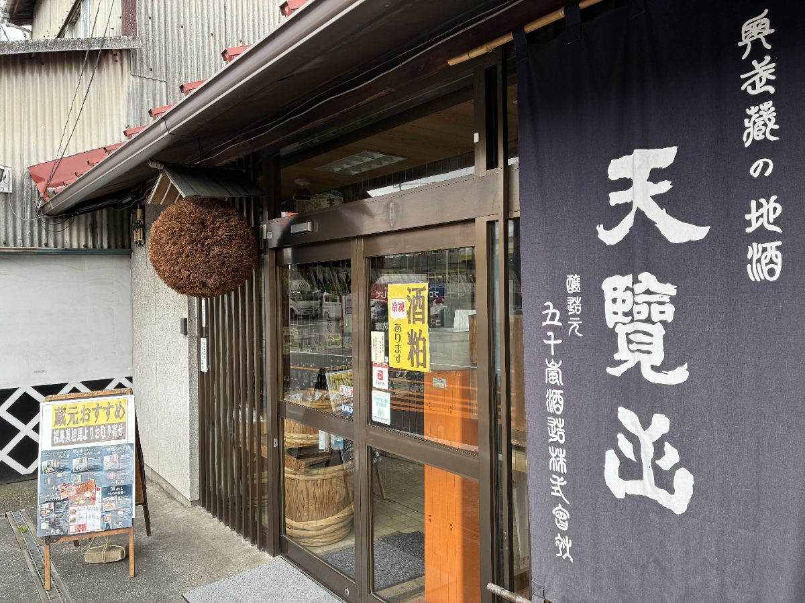
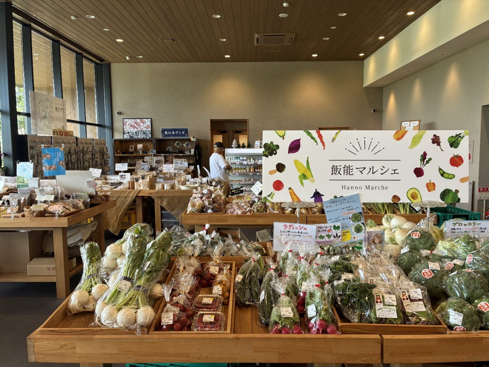
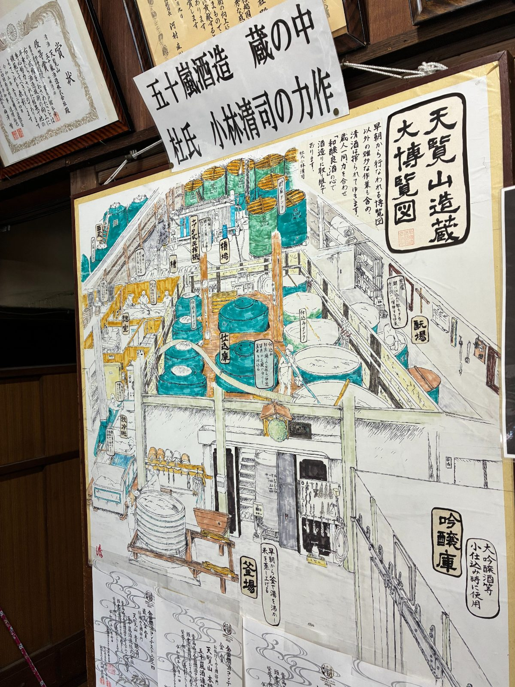
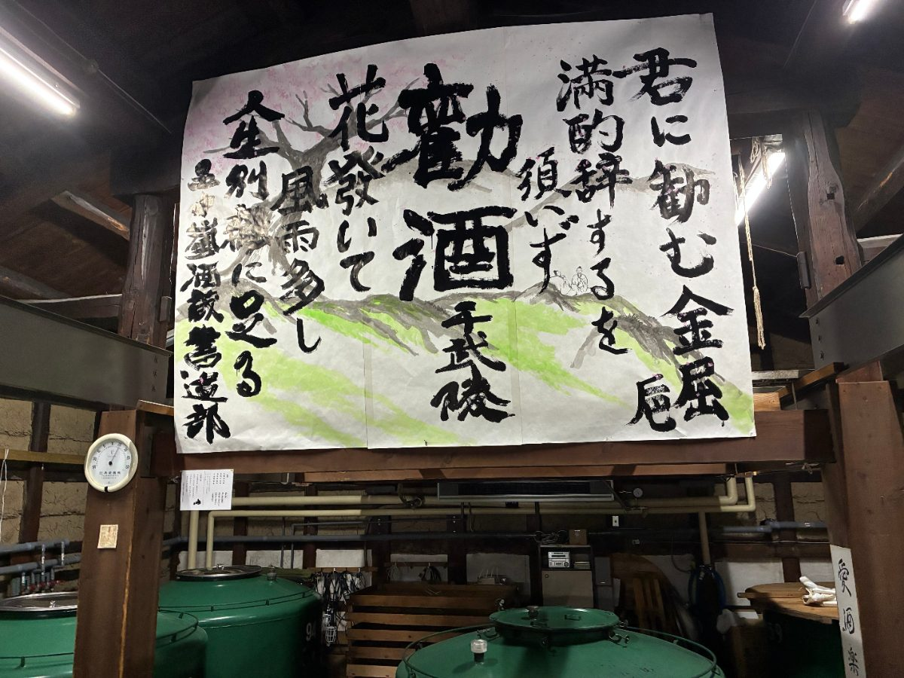

One Day in Hanno: Zen, Fermentation and Sake, 50 Minutes from Ikebukuro

If you want one day outside Tokyo that is not Kamakura or Nikko, Hanno is the easiest answer I know. It sits at the edge of the Okuchichibu hills in Saitama, about 50 minutes from Ikebukuro on the Seibu Ikebukuro Line, and it has three things within walking distance of each other: an old Zen temple, a place built around Japanese fermented food, and a sake brewery that has been making sake for well over a century.
I first went to Hanno to scout a new tour. To be honest, it was better than I expected. When I walked out of the ticket gate the air felt different: the hills were close, and I could hear the river. I have gone back since, once with the brewery's president showing me around, and this is the day I would plan for a friend.
Is Hanno worth the trip from central Tokyo?
It depends on what you want. There is no famous shrine, no souvenir street and very little English signage. What you get instead is a quiet half day that covers temple, food and sake without changing trains more than once. On my first visit I wrote down, on the train home, "a temple, fermented food, local sake and a bakery, in half a day". That is still the best summary I have.
- Getting there: Seibu Ikebukuro Line from Ikebukuro to Hanno, about 50 minutes on a fast train. Some trains from Ikebukuro terminate here; others continue towards Chichibu.
- Time needed: a relaxed half day for the three stops below, or a full day if you add the short climb up Mt. Tenranzan.
- Best day: avoid Mondays. The fermentation park is closed on Mondays (the next day when Monday is a holiday).
Morning: Noninji, a Zen temple with almost nobody in it
My first stop was Noninji, a Zen temple at the foot of Mt. Tenranzan, roughly 15 minutes on foot from Hanno Station. The approach is lined with stone lanterns, and on my first visit, in early summer, the trees made a tunnel of fresh green over it. The only sound was gravel under my shoes. It felt like stepping into another century. There were very few people, and nothing about it was set up for tourists.
The Japanese garden behind the main hall was full of azaleas that day, and the lanterns and green looked like a painting. I remember thinking, right there: I want to show this to visitors from abroad. In December there will be no azaleas, of course. Expect bare branches, clear air and long winter light instead. Check the notice at the gate for garden viewing hours and any fee, as these can change.

Lunch: what is a "fermentation theme park"?
Next door to the temple area is OH!!! (the full name is roughly "OH!!! Fermentation, Health and the Magic of Food"). If you hear "theme park" and think of rides, forget that. It is a group of shops and restaurants built around Japanese fermented food: a select shop of miso, soy sauce and pickles, a café, a restaurant, workshops, and Hanno Marche, a market with vegetables from local farms. Entry is free.
I had lunch in the restaurant. The local chicken was roasted with fermented seasonings, the pickles were nukazuke (rice-bran pickles) and the sauce was miso-based. It was not a flashy plate, but you could taste the care in it, and the fermentation theme ran through every part of the meal. After lunch I went into the bakery and bought a loaf of natural-yeast bread. It was still good the next morning, which is a small thing, but it is what I remember.
- Closed: Mondays (the next day when Monday is a national holiday), plus some days at New Year.
- Hours: the shop and café are listed as 10:00 to 17:00, and the restaurant serves lunch and dinner. Hours differ by shop, so check the official site before you go.
- Getting there: about 15 minutes' walk from Hanno Station.
Afternoon: tasting sake at a 129-year-old brewery
The last stop is back towards the station. A few minutes' walk from Hanno Station, in a quiet residential street, a navy noren and a ball of cedar leaves suddenly appear. This is Igarashi Brewery, which makes the local sake Tenranzan. The name comes from the hill above the temple: in 1882 Emperor Meiji watched a military exercise from it, and it has been called Tenranzan, "the mountain of the imperial view", ever since.
When I came back in October, the president himself showed me around. "Photos are fine," he said. "I'm copyright-free." That set the tone. Inside, a whole wall is covered by a hand-drawn map of the brewery, every step from the koji room to the press, drawn by the head brewer.

He told me they used to be rice farmers. "In autumn and winter there was nothing to do, so we became a brewery." They still brew only in autumn and winter, which makes December a good month to visit: the new season's sake is coming out. Water is drawn from a well, and the president was clear that polishing the rice more is not automatically better; what matters to them is the washing, the soaking time, the temperature and the water.
In the brewing room the mash was fermenting quietly in green tanks. If you put your ear close, you can hear the bubbles popping. Above the tanks hangs a calligraphy of a Tang-dynasty poem, "Kanshu" ("Have a drink"): flowers bloom, then wind and rain come; life is full of partings, so take this cup now. It is the poem behind a famous Japanese line, "sayonara dake ga jinsei da" (life is nothing but goodbyes). I did not expect to meet a thousand-year-old poem in a brewing room in Saitama.

Most of their sake is unfiltered and almost all of it is drunk inside Saitama, so you rarely see it elsewhere. The shop has a tasting corner where you can try several kinds for a small fee per cup, plus sake lees and snacks pickled in them. I tried their aki-agari (autumn-matured sake), and it was very easy to drink.
- Brewery tours: by reservation only. The shop and tasting do not need a booking.
- New-sake festival: the brewery holds one in early December (in 2026 it was on December 5, with a free shuttle bus from Hanno Station). Check the brewery's site for next year's date.
- Hours: I have not found reliable shop hours in English; check the official site before you go.
A simple one-day route
- About 9:15: Ikebukuro to Hanno on the Seibu Ikebukuro Line (about 50 minutes).
- 10:15: walk to Noninji (about 15 minutes) and spend an hour at the temple.
- 11:30: OH!!! for lunch, the market and the bakery.
- Optional: the short climb up Mt. Tenranzan behind the temple for a view over the plain.
- Afternoon: walk back towards the station and finish at Igarashi Brewery for a tasting.
On my first scouting day I waited for the train home looking at the red bridge over the river at Hanno-gawara. If you have ten minutes before your train, it is a good place to end the day.
The short version
Hanno gives you a quiet temple, a whole lunch built around fermented food and a sake tasting in one easy day, 50 minutes from Ikebukuro. Avoid Mondays, wear shoes you can walk in, and go in December if you want the new season's sake.
I guide this route in small groups of up to 4 guests: Noninji, OH!!! and Igarashi Brewery, with a brewery walkthrough added only when one can be booked. Dates on GetYourGuide.
More stories from these walks are in my ebook, Hidden Tokyo: A Local Guide's Notebook ($4.99).
Some links on this page are affiliate links: booking through them supports this site at no extra cost to you.